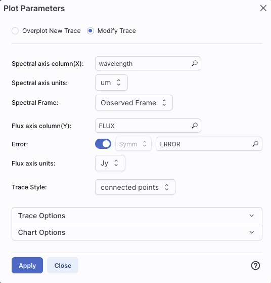
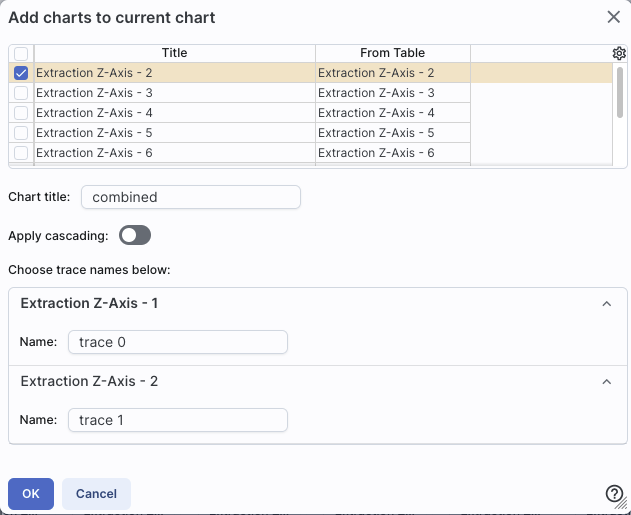
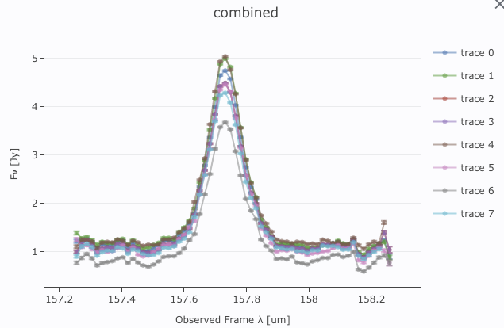
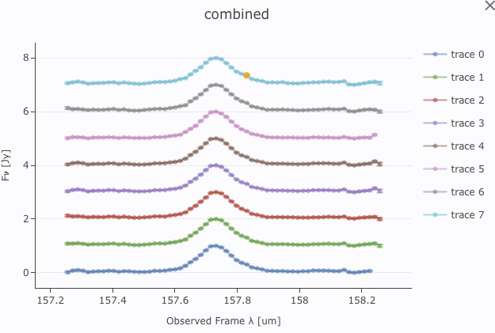

If you tick this box, and your data are formatted consistently with (or at least close to) the IVOA SpectrumDM v1.1 data model
Contents of page/chapter:
+Loading Spectra
+Extracting Spectra
+Plotting Spectra
+Redshifting Spectra
+Overplotting Spectra
+Combining Spectra
When you upload your own
files from disk, if you load a table, there is an option that
appears at the bottom left of the screen:
If you tick this box, and your data
are formatted consistently with (or at least close to) the IVOA SpectrumDM v1.1 data model  , then the tool will recognize
the data as a spectrum.
, then the tool will recognize
the data as a spectrum.
There is some flexibility in the interpreter, so if you think your file is close to the standard, give it a try. The computer might be able to figure it out.
When spectra are plotted, changing what is plotted by clicking on the gears is similar to, but not quite the same as, the generic case. Now, because it knows it is plotting a spectrum, you can select the x- and y-axis columns and units from a pre-defined set of choices in the drop-down menus, where it will convert the units when necessary.
It is probably most efficient to demonstrate plotting of spectra via specific examples.
|  | In this example, the tool has
identified the spectral axis as 'wavelength', understood the units,
converted them to microns, and is showing them in the observed
reference frame. It has identified the flux axis column as 'FLUX' and
the corresponding error as 'ERROR', and understood the units as Jy.
From the drop-down menus, you can choose to convert the wavelength to
Angstroms, nanometers, microns, millimeters, centimeters, or meters.
You can choose to convert the flux density to Janskys or
Watts/meter^2/Hertz. It is plotting the spectrum as connected points,
with error bars. |
| In this second example, the
tool is struggling a bit more. It has identified the spectral axis
column as 'wavelength' and is showing it in the observed frame, but it
is guessing about the units; they only appear in the plot. It has
identified the flux axis column as "flux_density", it has identified
the errors as "error", and it has understood those units as Jy. It is
showing the spectrum with connected points. Note too that in this
case, there are several spectral orders; at the top, you can see that
there is "choose trace" -- it turns out that there are four orders in
this spectrum, and it is overplotting all four on the same
plot, with errors. |
| In this less well-behaved
example, the tool has identified the spectral axis column as
'wavelength' and has figured out the units of it, shown in in microns,
in the observed frame. The flux axis column in this case is just
"HDU#0", so it is completely confused. It hasn't figured out what to
do about errors at all. It is showing the spectrum with connected
points. |
In all of these cases, you don't have as much flexibility in these plots as you do for plots in general, but the options you do have are highly customized to spectra, such as redshifts. See the next section!

Click 'Apply' to implement these changes in the plot. The axis labels on the plot correspondingly change.
To change back to the data as observed, simply pick "Observed Frame" from the drop-down menu.
If you load in a spectrum with multiple orders and just try to plot it without convincing the tool that the data are a spectrum, you get, by default, the plot on the left. But, if you let the tool know that the file you have uploaded is, in fact, a spectrum, you get the plot on the right, where the four orders in this spectrum are overplotted in different colors.
If you use the plot options (click on the gears icon), you can change the plot
parameters. It has options similar to what you get for generic
plotting, but limited as in the above, specifically for plotting
spectra:
When you have more than one plot pinned, this icon may appear at the top of the plot pane: This means "Combine Chart".
This option only appears if you have pinned at least two plots, and it will only let you combine plots if it recognizes that you have spectra loaded.
To start this process, click to select the first chart you want to
combine, then click on the "combine chart" icon. You get a pop-up
like this:

All of the remaining pinned charts
that can be combined appear as a list at the top. Once you select them
via the tickboxes on the far left of the list (the first one in the
list is selected here), they appear as options on the bottom of the
pop-up window. For this example, I extracted the observed spectra from
a SOFIA FIFI-LS data cube at several sky positions. The extractions
are the default "Extraction Z-Axis - n".
Continuing through this pop-up, you can choose to set the title of the new plot you are about to create -- the default is "combined".
The next choice is "Normalize & shift traces before overplotting."
Here is what this is and why it matters. If you are combining spectra
that are nearly all the same brightness, the spectra will be plotted
on top of each other. Sometimes that is what you want, and sometimes
it is not. If you click on the "Normalize & shift traces before
overplotting" option, you have an additional choice:

This is telling you how it is going to stack the spectra on the final
plot. See below for examples with and without this option. You can
adjust the amplitude of the shift by changing the size of the
padding, as shown.
Finally, you can change the name of the trace as displayed on the plot (and in the pull-down menus in the tool) for each of the spectra you are combining.
Click "OK" to actually make the new plot.
Here are two examples of combined spectra that were extracted from a
SOFIA FIFI-LS data cube, one without cascading, and one with
cascading. Both are useful, but in different contexts.


Note that after you combine a plot, there is a new drop-down at the top of the plot that controls which trace is in the 'foreground' for changing plot parameters or selecting points, but you can also simply click on points in the plot to bring that trace to the foreground.
⚠ Tips and Troubleshooting